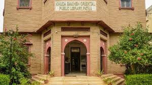
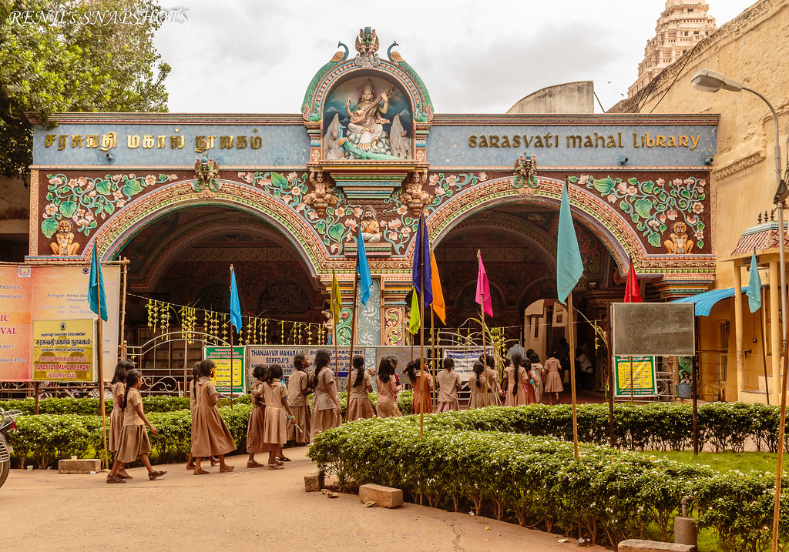
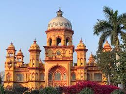

Libraries & Manuscripts
Explore India's vast literary collection through ancient libraries and manuscripts that preserve centuries-old knowledge.
Ancient Libraries & Manuscripts
The Asiatic Society Library, Mumbai

Khuda Bakhsh Oriental Library, Patna
National Library of India
India's largest library with over 2.2 million books, located in Kolkata. Houses rare manuscripts dating back to the 16th century.
Explore
Sarasvathi Mahal Library
One of Asia's oldest libraries in Thanjavur, with rare palm-leaf manuscripts in Sanskrit, Tamil, and Marathi.
Discover
Rampur Raza Library
Home to rare Islamic manuscripts, Mughal miniature paintings, and historical documents in Rampur, Uttar Pradesh.
ViewPanchatantra & Jataka Tales
Ancient Indian fables that originated in Sanskrit and Pali, teaching moral lessons through animal characters. They're a core part of Indian childhood and oral storytelling tradition.
LearnVedas
There are four Indo-Aryan Vedas: the Rig Veda contains hymns about their mythology; the Sama Veda consists mainly of hymns about religious rituals; the Yajur Veda contains instructions for religious rituals; and the Atharva Veda consists of spells against enemies, sorcerers, and diseases.
LearnDigital Library of India
An initiative to digitize rare Indian texts and scriptures. It includes Vedas, Upanishads, old newspapers, and literary classics, preserving knowledge for future generations.
Research